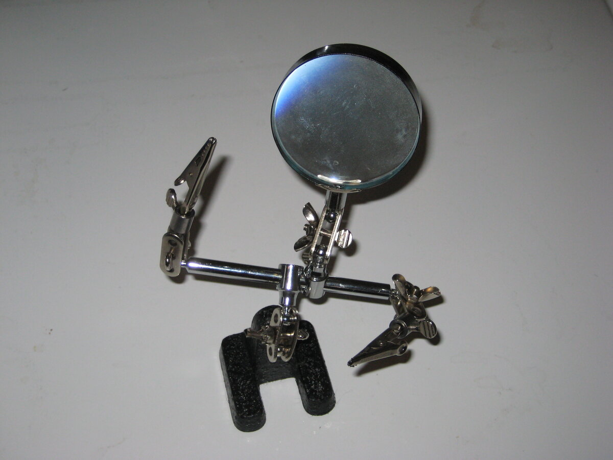
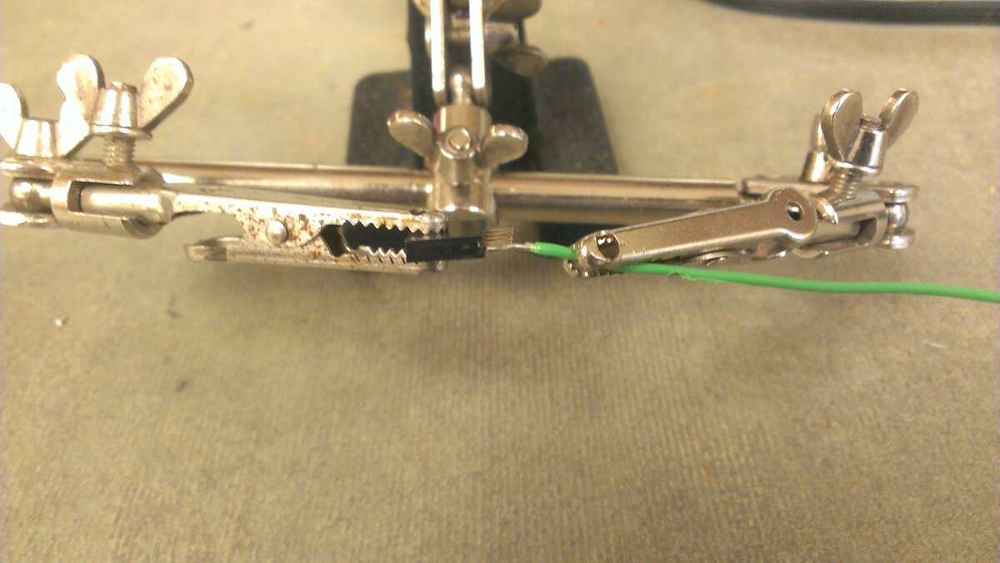
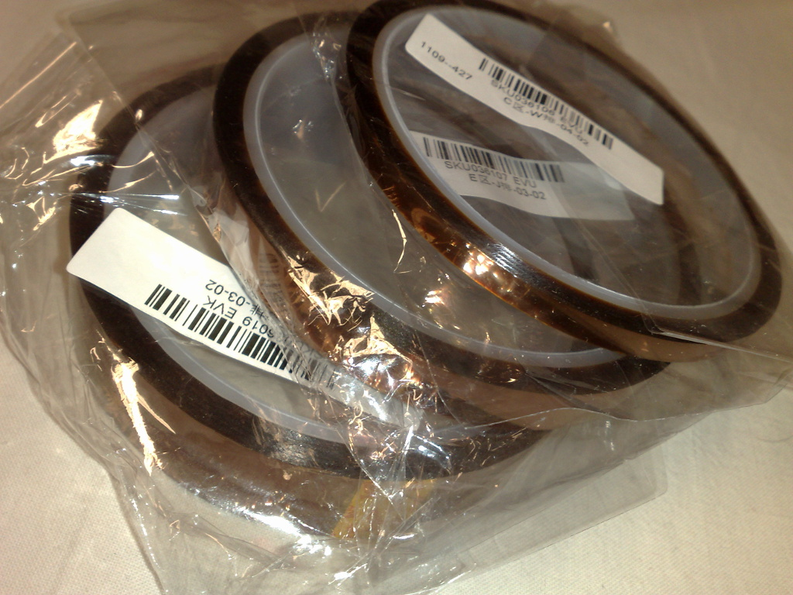

Fixturing & Workholding
The single biggest upgrade to your soldering isn't a better iron — it's holding the board still. You need both hands free: one for the iron, one for solder. Everything else is damage control.
Soldering requires:
- Iron tip contacting the joint (hand 1)
- Feeding solder into the joint (hand 2)
- The board and component held perfectly still (hand 3?)
You don't have a third hand. So you need a fixture. The quality of your fixture directly determines the quality of your work — a board that shifts mid-solder means cold joints, bridges, and wasted time.
The Cheap Helping Hands Problem
Photo: The classic helping hands — everyone's first fixture

Dro Kulix. Public domain.
The $7 alligator-clip helping hands are how most people start. They're also why most people think fixturing is frustrating. The problems:
- Alligator clips damage boards — teeth scratch solder mask, crush thin PCBs, and slip off edge-connectors
- Ball joints drift — you position the board, tighten it, and it sags 5mm. Repeat forever.
- Base is too light — the whole thing tips when the board is off-center
- Only two clips — can hold the board OR a component, rarely both well
- Height is wrong — the board ends up at an awkward angle, too high or too low for comfortable iron contact
They're fine for holding two wires together. For PCB work, you need something better.
What Actually Works
Low-Profile PCB Vises
The key insight: the board should sit nearly flat on the table. Your forearms rest on the work surface, your hands are relaxed, and the iron approaches from a natural angle. A vise that lifts the board 15cm in the air defeats the purpose.
| Product | Opening | Height | Notes |
|---|---|---|---|
| Stickvise | 155mm (6.1in) | 16mm (0.63in) | Anodized aluminum + nylon jaw inserts. Ultra low-profile. Hackable — 3D-printable custom jaws. ~$40. |
| Hakko Omnivise C1390C | Adjustable | Low | Professional quality. M6 thumbscrews. ~$65. Heavier base = no sliding. |
| Panavise Jr. PV-201 | 73mm (2.9in) | Variable (tilts) | 210° tilt, 360° rotation. Heat-resistant jaws (175°C continuous). Single-knob control. ~$38. Made in USA. |
The Stickvise approach is particularly good for hand soldering — board is at table height, both arms supported. For inspection and rework where you need to tilt the board, the Panavise style is better.
Magnetic Systems
The modern approach: a steel base plate with magnetic-base holders that slide anywhere.
| Product | Concept | Strengths |
|---|---|---|
| PCBite (Sensepeek) | Magnetic steel plate + spring-loaded grippers and probes | Infinitely repositionable. Probes double as test points. Professional quality. ~$80-180 for kits. |
| QuadHands Magnetic | Steel base + 4 magnetic gooseneck arms with clips | Heavy base (2+ kg) won't tip. All-metal arms resist heat. ~$50. |
| DIY magnetic | Steel plate/pan + neodymium magnets + hex standoffs | Cheap. Customize to any board shape. Magnets stack for height adjustment. |
The PCBite system deserves special mention — it was designed by engineers who were tired of everything else. The spring-loaded board grippers hold the PCB firmly without clamping force, and the probes let you measure signals without growing a third arm. The magnetic base means you rearrange everything in seconds.
Upgraded Helping Hands
Photo: Helping hands in use — holding wire for soldering

Kris Moreno. CC BY-SA 3.0.
If you do need articulated arms (for holding wires, components, or probes), avoid the cheap ball-joint style. Better options:
| Product | Arms | Base | Notes |
|---|---|---|---|
| QuadHands Classic | 4 gooseneck | 8in×8in steel, 1.8 kg | All-metal. Stainless clips. Won't tip. ~$40. |
| QuadHands Flex | 4 gooseneck | Attaches to existing vise | Add-on for Panavise etc. Magnetic bases. ~$50. |
| Coolant hose arms | Any number | DIY (heavy base) | Loc-Line or coolant hoses from eBay. Best bang/buck for DIY. |
The key spec is base weight. If the base weighs less than 1 kg, it will tip when you push against a clip. QuadHands solved this — their base is heavy steel, not cheap cast pot metal.
Fixturing for Hot Air Rework
Hot air adds a new constraint: everything around the target gets hot too. Components near the rework site can reflow and shift if not secured.
- Board must be level and supported from below — use a preheater or ceramic plate, not a vise that grips the edges (this creates a thermal bridge)
- Nearby components need protection — kapton tape or aluminum foil shields
- The target component must not be mechanically disturbed — no clips touching it during reflow
Photo: Kapton tape — the fixturing secret weapon

Wikimedia Commons. CC BY-SA 3.0.
Kapton Tape
Polyimide (Kapton) tape is rated to ~400°C. Uses in fixturing:
- Tack components before soldering — place an SMD component, tape one end, solder the other end, remove tape, solder the taped end
- Mask during hot air — cover nearby components to reflect heat and prevent accidental reflow
- Secure wires during soldering — tape a wire to the board so it doesn't spring away when you touch it with the iron
- Protect flex cables — FFC/FPC connectors melt easily. Kapton tape over the cable during nearby rework.
Hot Air Board Support
| Method | When to Use |
|---|---|
| Ceramic plate or steel mesh | Small boards — lay flat, heat from above |
| Dedicated preheater (FR-870 etc.) | Production rework — IR bottom heat + hot air top |
| Hakko C5028/C5029 grip fixtures | FR-810/811 hot air systems — holds board at correct distance from nozzle |
| Kapton + aluminum foil tent | Protecting nearby components during localized rework |
DIY Fixtures
Some of the best fixtures are custom-built for a specific job.
3D-Printed Solutions
- Custom jaw plates — the Stickvise publishes parametric CAD files. Print jaws shaped to your specific board outline.
- Print-in-place grippers — fully 3D-printed PCB grippers with integrated spiral springs. No hardware needed.
- Board cradles — for repeat production, print a cradle that locates the board by its mounting holes or outline
- Stencil frames — hold solder paste stencils at the right registration. Two hinge clips + a flat base.
The Dollar Store Magnetic Holder
Steel pie pan ($1) + neodymium magnets ($3) + M3 hex standoffs ($2) + rubber grommets ($1). Total: $7 for a fully adjustable magnetic PCB holder that's arguably better than a $40 commercial product. The magnets stack to adjust standoff height, and the steel pan doubles as a parts tray.
Fixturing Mistakes
| Mistake | Why It's Bad | Fix |
|---|---|---|
| Holding board by hand | It moves. Every time. Cold joints and bridges. | Any fixture at all. Even tape. |
| Clips touching solder joints | Metal clips are heat sinks — they steal heat from the joint | Clip the board edge, never near the joint |
| Board too high | Arms unsupported, hand tremor, poor iron angle | Low-profile vise. Board at table height. |
| Fixture blocks access | Can't reach all sides without repositioning | Magnetic or quick-release. Reposition in seconds. |
| Gripping thin boards too tight | PCB flexes → component stress, potential cracking | Gentle clamping. Nylon jaw inserts. |
| No support under large boards | Board bows in the middle → uneven contact during reflow | Support from below at center. Use standoffs. |
In order of priority, if you're just starting out:
- A low-profile vise (Stickvise, Omnivise, or similar) — $40-65. This is the single biggest quality improvement you can make.
- Kapton tape — $8 for a roll. Holds components, protects during rework, masks areas.
- Blu-tack / mounting putty — holds components in place before tack-soldering. Free if you already have it.
- A silicone mat — heat-resistant work surface. Protects your desk and gives you a non-slip surface. $10-15.
Total: ~$60. This setup handles 90% of hand soldering and basic hot air work. Add a magnetic system (PCBite or DIY) when you find yourself constantly repositioning.
Production Fixturing
For repeat assembly (small batches, kits, production), dedicated fixtures pay for themselves quickly:
- Pallet/carrier systems — boards sit in custom pallets on a conveyor or workstation. Each board is located by pins through mounting holes. Used in wave soldering and selective soldering.
- Selective solder fixtures — mask everything except the through-hole joints that need wave contact. Titanium or high-temp polymer.
- Reflow carriers — hold odd-shaped boards flat through the reflow oven. Prevent warpage of thin boards at 250°C.
- Test fixtures (bed of nails) — spring-loaded pogo pins contact test points for automated electrical testing after assembly.
- Conformal coating masks — kapton or custom silicone masks that expose only the areas to be coated.
NASA-STD-8739.3 and IPC J-STD-001 both require that boards be adequately supported during soldering to prevent flexure. For Class 3 (high-reliability) work, this isn't a suggestion — it's an auditable requirement.